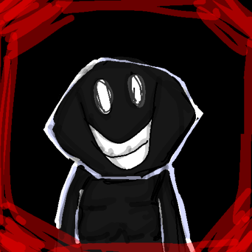
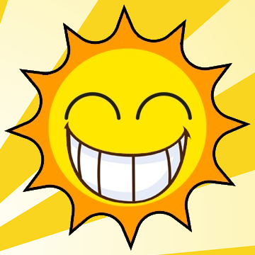

O Ser
O Ser é um líquido receptáculo utilizado como base física dos experimentos. Ele reage à intenção, consciência e ao espírito.
Wiki oficial
O Lugar é um jogo de atmosfera sombria ambientado em um complexo infantil aparentemente comum, construído sobre experimentos secretos envolvendo almas humanas e uma substância chamada Ser.
O jogador assume o papel de Player, que explora o complexo Sunny's Playstation enquanto tenta resgatar seu irmão e descobrir a verdade por trás dos experimentos.
O Ser é um líquido receptáculo utilizado como base física dos experimentos. Ele reage à intenção, consciência e ao espírito.
O Núcleo de Deus é a fonte primária de Ser e Espírito (alma, memória, identidade e outros aspectos). Ele sustenta todo o sistema experimental do complexo.
Os experimentos são categorizados com base em sua estabilidade e sucesso de integração:
Criado a partir do Ser e de uma única alma funcional. O protagonista do desenho animado Sunny and Friends..
Não há registros para este experimento.

Carismático, inteligente, sempre sabe como ajudar.
A IA do complexo. Atua como cuidadora e guia. Existem modelos derivados dela espalhados.
Entidade de fogo, teimosa e com temperamento difícil. Apesar disso, é um cozinheiro excepcional.
Dotado de força física absurda e um senso de justiça inabalável. Atua como o protetor do grupo.
O pilar de calma. Independente, ele ajuda os outros a encontrar segurança e sono em meio ao caos.
Calma, tímida às vezes, mas sabe lidar com seus problemas, e é ótima em ensinar coisas.
Muito sociável, se preocupa demais com os outros, vive fazendo artes e costurando.
Arg.
Acessar Subject Files →


